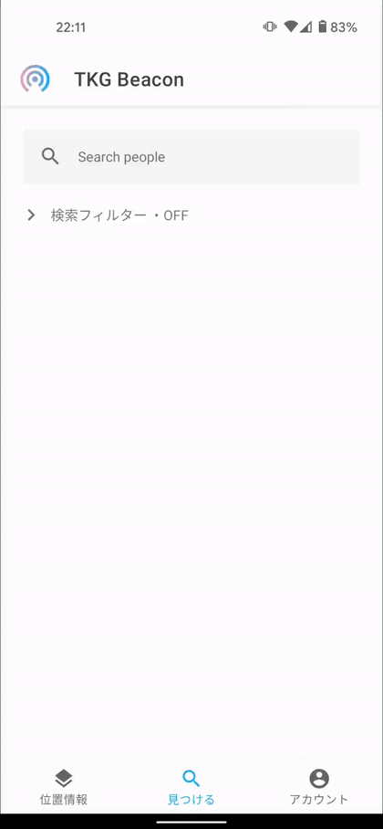
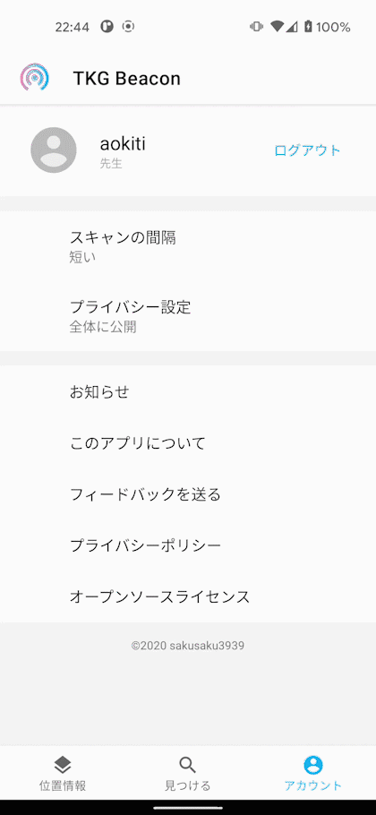
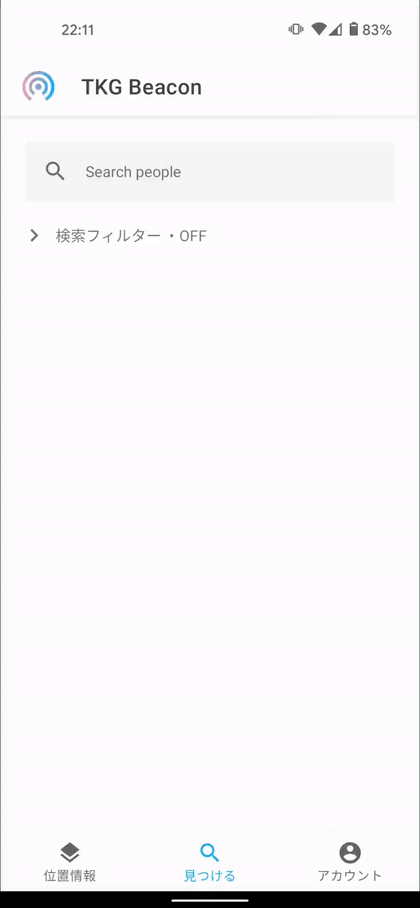
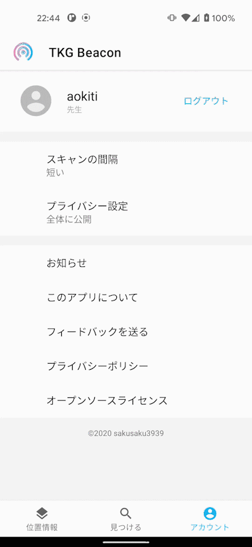
先生と入れ違いになることが多く不便だということから、ビーコンを利用して位置情報を共有できるアプリ「TKG Beacon」を開発しました。 アプリ名の由来は多摩科学技術高校から来ており、教室一つ一つにビーコンを置きそのビーコンのIDを取得することで位置を把握する仕組みになっています。
アプリには3つのタブがあり、メイン画面となる階層別の位置情報マップ、生徒や先生などの検索画面、アカウントやスキャン間隔の設定ができる設定画面があります。
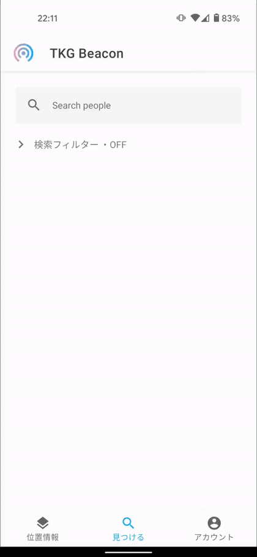
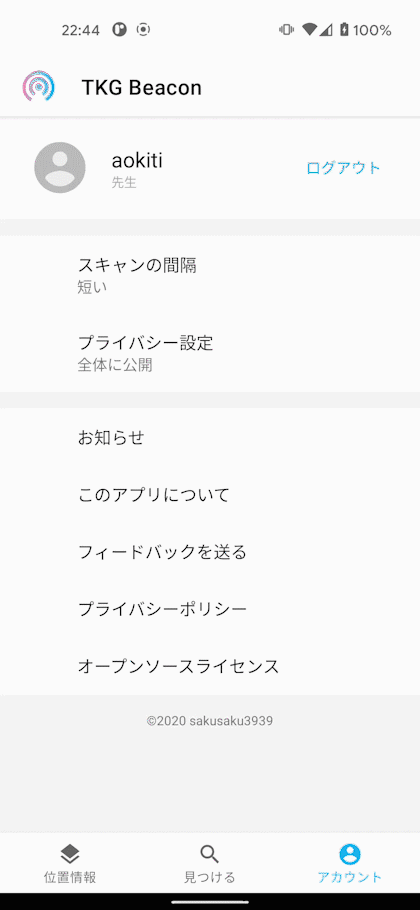
初回起動時はログイン画面とパーミッション確認があり、ログイン画面ではパスワード漏洩のリスクやUXの向上などの観点から、 パスワードレス認証であるマジックリンクを採用しました。 この認証方法では、登録されたメールアドレス宛に1回限り使えるログイン用の認証リンクを送り、それをクリックすることでログインできます。
 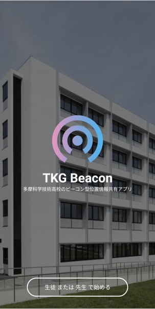
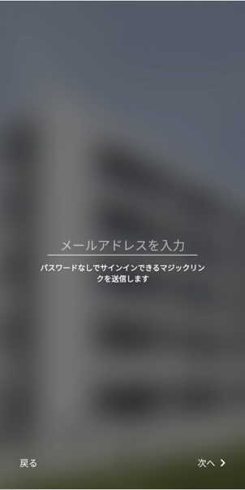
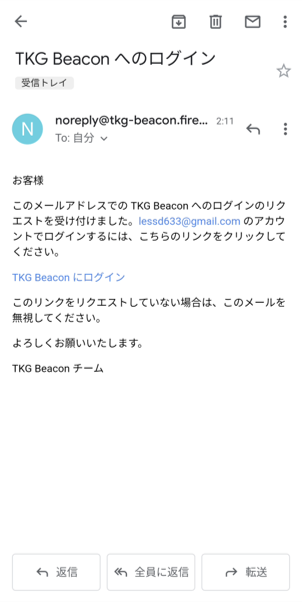
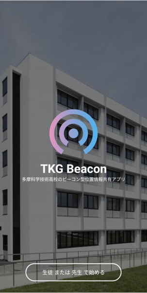
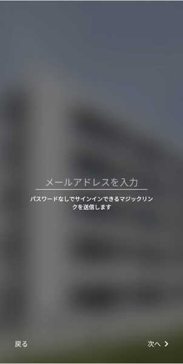
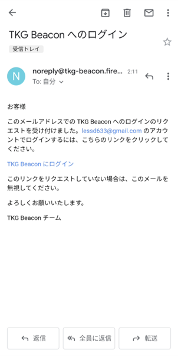
今回制作したアプリはAndroidのみで動かすことができ、開発言語はKotlin、バックエンドにはFirebaseを使用しました。
また、アプリを開発するにあたって認識のズレや要件の抜けが起きないよう、Adobe XDを使用しUI設計を行いました。